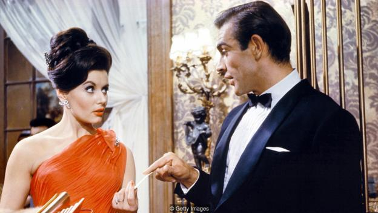

Culture
Where the dogs run: British pop's unsentimental view of the high street
With the high street in crisis, Michael Hann surveys British pop for tributes to its quirks and characters – and finds a bleak outlook compared to its American counterpart
What is a high street? As children, it was the place our parents took us when they needed to shop, where maybe there was the hope of a trip to the toy shop or a drink in a cafe. As adolescents, it was the place we would mooch around on Saturday afternoons, flitting between the handful of shops that might interest us, killing hours over a Coke in McDonald’s. As an adult, my local high street is a place not just to shop but where I know people – the barber, the cafe owner, the fella in the hardware store, the pub landlord, the drunk guy who is always hustling for a quid to buy more lottery tickets. It’s a place of local characters as much as it is two parallel rows of buildings.
The high street is woven into the fabric of the lives of everyone living in a town or suburb, which is why the concept of “the high street” has its own place in the news. Just the past few days have brought us stories such as “50,000 jobs lost or threatened on high street this year”, “How to mend Britain’s broken high street”, “Costa owner blames falling sales on high street decline”, and that’s before we even get to the travails of John Lewis. The high street is a cipher for everyday life.
Despite that, and despite British pop’s celebration of the mundane and the parochial, the high street has never been a central location for pop.
There is High Street by Blood Orange, which isn’t really about the high street – despite its references to Ilford Lane, a high street in north-east London – until the end, when Skepta raps about the everyday sights: “Single mom struggling with the pushchair / She had a bad mouth but she had good hair / Stole a phone in the shop getting looked at / Barbershop, hairline’s getting pushed back / Guys looking at me like they wanna fight me / Just another day on the high street.”
The reference to the barber links it to one of the greatest pieces of English pop parochialism, Penny Lane by the Beatles, where there’s “a barber showing photographs / Of every head he’s had the pleasure to know”. Paul McCartney’s is an idealised high street, where no one is looking at him like they want to fight him.
In Shopping, the B-side to the final single by the Jam, Beat Surrender, Paul Weller wasn’t bothered about the high street as any kind of metaphor for a life either contented or disappointed. He was, as the on-the-nose title suggests, out shopping: “As I flit from window to window / I’m trying to pick out a friendly bargain.” It’s an odd little song, and it’s not hard to work out why it was a B-side rather than even an album deep cut.
The unmade Bond film - with robo-sharks

James Bond has done some memorable things in his time, from dodging laser blasts on a space station to driving an invisible car across a glacier. One thing he hasn’t done, however, is deactivate a robot shark which is carrying an atom bomb through a Manhattan sewer. But he very nearly did. In 1976, a Bond screenplay revolved around a shoal of remote-controlled, nuclear-weaponised robo-sharks. Its title was Warhead. And one of its three screenwriters was none other than the original big-screen 007, Sean Connery.
Another of the screenwriters was Kevin McClory, who had been introduced to Ian Fleming, the author of the Bond novels, back in 1958, well before any of them had been turned into films. He was almost as much of a Bond figure as Fleming himself. Fleming was a globe-trotting former British naval intelligence officer with a prodigious appetite for cigarettes and alcohol. McClory was a handsome Irish playboy who had served in the British Merchant Navy and had been engaged to Elizabeth Taylor. He had also written, produced and directed a film, The Boy and the Bridge, so when he asked Fleming if he could make the first ever Bond movie, the author felt that he was the ideal man for the job.
McClory’s plan was that instead of adapting one of Fleming’s published novels, they would concoct a new story with the help of an established screenwriter, Jack Whittingham. Several drafts were completed, some better than others: the results of one early brainstorming session had 007 going undercover as a cabaret entertainer, having been taught how to tread the boards by Noël Coward and Laurence Olivier. Mercifully, the revised plot concentrated on an international criminal consortium named Spectre, an organisation which hadn’t featured in any previous Bond novels. One of its officers, Largo, was to steal two Nato nuclear missiles, but Bond would track him to the Bahamas before he could launch them. Fleming was happy with the premise, although not with the title, Longitude 78 West. He replaced it with a title of his own: Thunderball.
For a while, it looked as if the film would be made, possibly with Alfred Hitchcock at the helm and Richard Burton playing the Secret Service’s top agent and Martini aficionado. But Fleming began to suspect that McClory didn’t have the experience to make an espionage blockbuster, after all. He decided instead to use the Thunderball screenplay as the basis of his next novel. Unfortunately, he didn’t get around to consulting the two men who had done most of the work.
How the Hong Kong Book Fair became the world's largest
With over one million visitors, the week-long event rivals World Cup attendance. It also became a haven from China’s censorship, reports Linda Kennedy.
Hong Kong has avoided the strict censorship the Chinese government imposes on the mainland. That’s because, since the handover of the territory from the UK to the People’s Republic of China in 1997, this city of gleaming skyscrapers has been classified as a “special administrative region”. That semi-autonomy long meant that wealthy mainland Chinese would travel to Hong Kong to savour a little more freedom.
That’s, in part, how the Hong Kong Book Fair became the largest such literary gathering in the world. Mainlanders would purchase books there that were censored in the rest of China, then smuggle them back home.
In the video above, Linda Kennedy takes a look at how the Hong Kong Book Fair became such a massive force for publishing freedom. Click the ‘play’ button above for the video to start.
If you would like to comment on this story or anything else you have seen on BBC Culture, head over to our Facebook page or message us on Twitter.
And if you liked this story, sign up for the weekly bbc.com features newsletter, called “If You Only Read 6 Things This Week”. A handpicked selection of stories from BBC Future, Earth, Culture, Capital and Travel, delivered to your inbox every Friday.